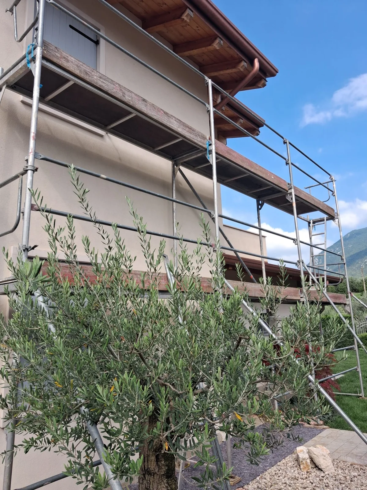

Protezione Garantita
-
Tecnologie ai Silossani:
Idrorepellenza avanzata che blocca l'acqua piovana lasciando evaporare l'umidità interna della muratura.
-
Rivestimenti Elastomerici:
Formulazioni flessibili ideali per prevenire, mascherare e contenere le micro-crepe da assestamento strutturale.
-
Trattamenti Protettivi:
Pitture additivate con principi attivi antialga e antimuffa per prevenire le macchie scure tipiche della pianura veneta.
Stima e Sopralluogo
Pianifica un controllo tecnico esterno della tua abitazione. Riceverai un preventivo chiaro e dettagliato senza alcun vincolo.
Ottieni Preventivo
Proteggi e Valorizza la tua Facciata
Le pareti esterne degli edifici a Padova e provincia sono soggette a continui sbalzi climatici: nebbie dense nei periodi freddi, forte irraggiamento solare estivo e inquinamento atmosferico. Noi di **Imbianchini Padova** realizziamo tinteggiature esterne impiegando prodotti tecnologici di ultima generazione per garantire stabilità dei colori e protezione duratura del fabbricato.
Le Nostre Tecnologie per Esterni:
- Pitture Silossaniche: Rappresentano lo standard qualitativo più elevato, unendo idrorepellenza superficiale ad un'eccellente traspirabilità al vapore.
- Finiture al Quarzo: Rivestimenti riempitivi robusti, resistenti all'abrasione e stabili ai raggi ultravioletti (UV), ideali per intonaci tradizionali.
- Sistemi Elastomerici Anti-Crepe: Specifici per facciate soggette a tensioni e microcavillature, mantengono la muratura sigillata ed elastica.
- Cicli Sanitizzanti Antialga: Una barriera essenziale contro la proliferazione biologica sulle pareti esposte a nord o in aree ad alta umidità.
Metodo Operativo Rigoroso
Ogni intervento all'esterno prevede un rigoroso protocollo di preparazione. Eseguiamo lavaggi preventivi ad idropulitrice per rimuovere sporco, fuliggine o muffe latenti. Consolidiamo l'intonaco riparando eventuali distacchi con malte antiritiro e applichiamo primer acrilici o silossanici per uniformare l'assorbimento. Curiamo direttamente l'allestimento di ponteggi e piattaforme aeree, operando in piena conformità con le leggi sulla sicurezza.
Dettagli tecnici e cura nel tempo
Diagnosi della facciata
Prima di scegliere il rivestimento controlla distacchi, fessure, sali e ingressi d’acqua da davanzali e gronde. Una pittura non ripara infiltrazioni o lesioni strutturali. Sul cappotto occorre verificare la compatibilità con il sistema esistente e i limiti per tinte scure indicati dal produttore.
Ciclo e condizioni di posa
Rimuovi i materiali incoerenti e risana il fondo prima del primer. Valuta permeabilità al vapore e assorbimento d’acqua della finitura, invece di scegliere solo tra “quarzo” e “silossanico”. Temperatura, umidità, sole diretto, pioggia e rischio di gelo devono rientrare nei limiti della scheda tecnica durante posa e asciugatura.
Controlla periodicamente gronde, raccordi e zone esposte: riparare un ingresso d’acqua aiuta a preservare anche il ciclo di pittura.